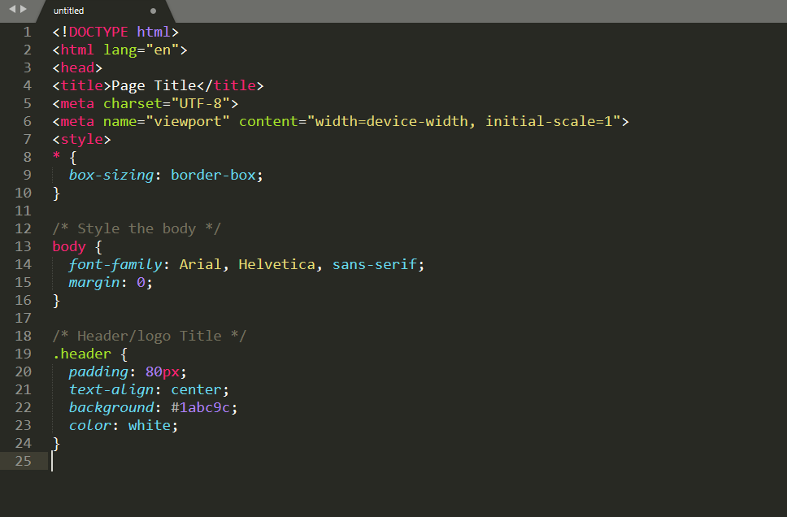
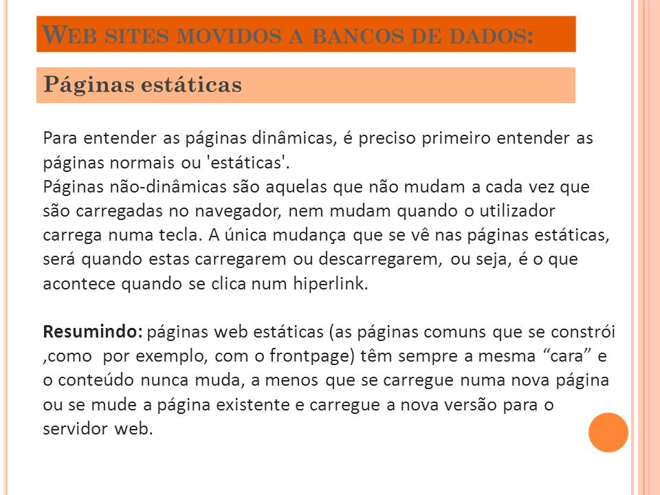
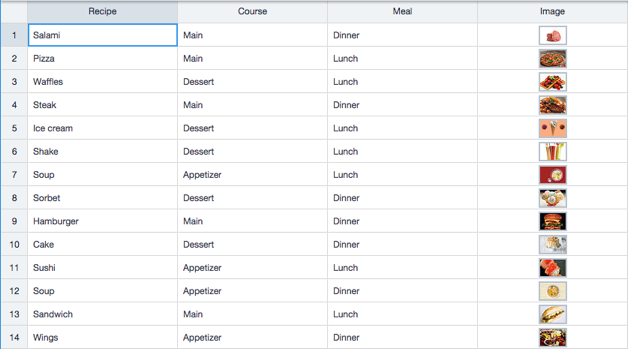
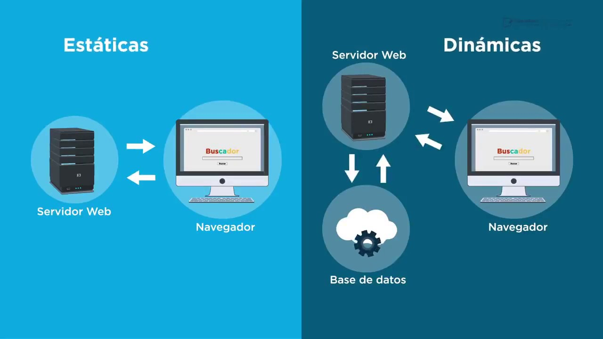

Páginas Estáticas e Páginas Dinâmicas;
Páginas Estáticas
O que é um site estático?
- Sites estáticos geralmente vêm com um número fixo de páginas e têm um layout específico.
Quando a página é executada em um navegador, o conteúdo é literalmente estático e não muda em resposta às ações do usuário.
Um site estático geralmente é criado com HTML e CSS em editores de texto simples como o Notepad++.
Se você precisa de um site menor que três páginas, optar por um site estático é a escolha adequada.
Construí-lo não leva tanto tempo ou esforço como no caso de sites dinâmicos.
Se as páginas do seu site devem parecer diferentes, o código HTML pode ser facilmente duplicado em cada uma dessas páginas, contendo as alterações necessárias.
Mesmo que o site exiba a mesma coisa sem detalhes de navegação marcados, sites estáticos não precisam apresentar apenas texto simples.
Na verdade, você pode usar vários elementos multimídia e vídeos.
Um site HTML pode parecer bonito, pode ser um site responsivo, mas o código fonte da página não mudará, não importa quais ações um usuário tome sobre ele.
Vantagens
Vantagens
-
Menos complexo para desenvolver;
Tempos de carregamento geralmente mais rápidos e tamanho de página menor;
Todos os recursos podem ser armazenados em cache para uma velocidade de página ainda mais rápida.
Desvantagens
- Desvantagens
Não é interativo;
Atualizações devem ser feitas diretamente no código HTML;
Não é possível executar a funcionalidade complexa necessária em muitos sites modernos.
O que é um site dinâmico?
- Comparado a sites estáticos, que são puramente informativos, um site dinâmico é mais funcional.
Permite que os usuários interajam com as informações listadas na página. Claro, isso requer usar mais do que apenas código HTML.
Os sites estáticos usam apenas código HTML e CSS do lado do cliente, enquanto os sites dinâmicos dependem tanto de linguagens de script do lado do cliente quanto do lado do servidor, como JavaScript, PHP ou ASP.
Quando um usuário acessa um site dinâmico, o site pode ser alterado através de código que é executado no navegador e/ou no servidor.
O resultado final é o mesmo que em um site estático: uma página HTML exibida no navegador da Web.
Para gerar conteúdo dinâmico, esses sites usam uma combinação de scripts do lado do servidor e do lado do cliente.
Scripting do lado do cliente refere-se ao código que é executado pelo navegador, geralmente com JavaScript.
Enquanto isso, o scripting do lado do servidor refere-se ao código que é executado pelo servidor (antes que o conteúdo seja enviado para o navegador do usuário).
Vantagens
-
Geração de conteúdo dinâmico com base no usuário;
Atualiza facilmente o conteúdo quando usado com um CMS;
Possibilidade de usá-lo em cenários mais complexos, como uma loja virtual, fórum, plataforma de mídia social, etc.
Desvantagens
-
Pode ser mais lento que um site estático devido ao aumento nos recursos necessários;
Mais complexo para desenvolver;
Maior risco de problemas de segurança.
Estatica


Dinamica

Estatica e Dinamica img
